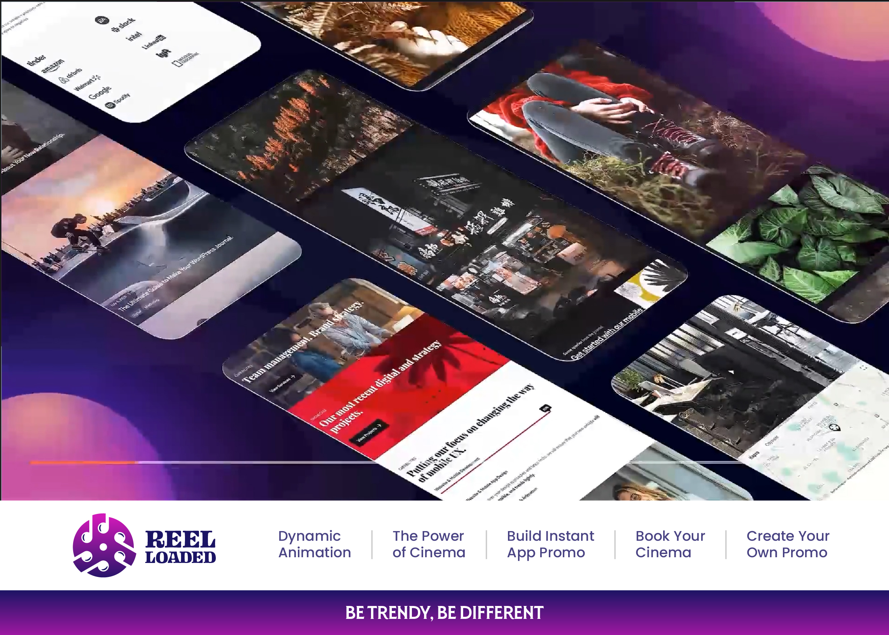

<html>

<head>
  <meta name="viewport" content="width=device-width, initial-scale=1" />
  <script src="https://aframe.io/releases/1.6.0/aframe.min.js"></script>
  <script src="https://cdn.jsdelivr.net/gh/MindAR-js/aframe/dist/aframe-mindar.js"></script>
  <!-- no need but need to test it..-->
  <script src="https://cdn.jsdelivr.net/npm/mind-ar@1.2.5/dist/mindar-image-aframe.prod.js"></script>
  <script src="https://cdn.jsdelivr.net/gh/c-frame/aframe-extras@7.5.0/dist/aframe-extras.min.js"></script>
  <!-- use for the animation (animation-mixer) -->
  <!-- <script src="https://cdn.jsdelivr.net/gh/hiukim/mind-ar-js@1.2.5/dist/mindar-image-aframe.prod.js"></script> -->
  <script src="https://unpkg.com/aframe-chromakey-material/dist/aframe-chromakey-material.min.js"></script>
  <!-- use for the green screen transparency -->

  <style>
    #example-scanning-overlay {
      display: flex;
      align-items: center;
      justify-content: center;
      position: absolute;
      left: 0;
      right: 0;
      top: 0;
      bottom: 0;
      background: transparent;
      z-index: 2;
    }

    @media (min-aspect-ratio: 1/1) {
      #example-scanning-overlay .inner {
        width: 50vh;
        height: 50vh;
      }
    }

    @media (max-aspect-ratio: 1/1) {
      #example-scanning-overlay .inner {
        width: 80vw;
        height: 80vw;
      }
    }

    #example-scanning-overlay .inner {
      display: flex;
      align-items: center;
      justify-content: center;
      position: relative;

      background:
        linear-gradient(to right, white 10px, transparent 10px) 0 0,
        linear-gradient(to right, white 10px, transparent 10px) 0 100%,
        linear-gradient(to left, white 10px, transparent 10px) 100% 0,
        linear-gradient(to left, white 10px, transparent 10px) 100% 100%,
        linear-gradient(to bottom, white 10px, transparent 10px) 0 0,
        linear-gradient(to bottom, white 10px, transparent 10px) 100% 0,
        linear-gradient(to top, white 10px, transparent 10px) 0 100%,
        linear-gradient(to top, white 10px, transparent 10px) 100% 100%;
      background-repeat: no-repeat;
      background-size: 40px 40px;
    }

    #example-scanning-overlay.hidden {
      display: none;
    }

    #example-scanning-overlay img {
      opacity: 0.6;
      width: 90%;
      align-self: center;
    }

    #example-scanning-overlay .inner .scanline {
      position: absolute;
      width: 100%;
      height: 10px;
      background: white;
      animation: move 2s linear infinite;
    }

    @keyframes move {

      0%,
      100% {
        top: 0%
      }

      50% {
        top: calc(100% - 10px)
      }
    }
  </style>

  <script type="module" src="./js/main.js"></script>
</head>

<body>
  <!-- <div id="example-scanning-overlay">
      <div class="inner">
         	  
         	  
      <div class="scanline"></div> // need to remove comment this..
      </div>
    </div> -->
  <a-scene
    mindar-image="imageTargetSrc: ./assets/target.mind; filterMinCF:0.0001; filterBeta: 0.01;"
    vr-mode-ui="enabled: false" device-orientation-permission-ui="enabled: false">
    <a-assets>
      <a-asset-item id="interactivePoster" src="./assets/glb/interactive-poster.glb"></a-asset-item>
      <video id="card" src="./assets/video/bridging.mp4" autoplay muted playsinline></video>
      <video id="nenon" src="./assets/video/nenon.webm" autoplay loop muted playsinline></video>
      <video id="3dEnv" src="./assets/video/3denv_video (1).mp4" autoplay loop muted playsinline></video>
      <video id="placeProduct" src="./assets/video/place_in_live_new.mp4" autoplay loop muted playsinline></video>
      <video id="animationPoster" src="./assets/video/anim-post-instruction.mp4" autoplay loop muted
        playsinline></video>
    </a-assets>

    <a-camera position="0 0 0" look-controls="enabled: false" cursor="fuse: false; rayOrigin: mouse;"
      raycaster="far: 10000; objects: .clickable"></a-camera>
    <a-entity business-card mindar-image-target="targetIndex: 0" id="targetEntity">
      <a-plane src="#card" position="-0.9 0 0" height="0.800" width="1" rotation="0 0 0" visible="false"
        material="shader: chromakey; transparent: true; opacity: 0">
      </a-plane>
      <!-- <a-anchor id="posterAnchor" position="0 0 0"> -->
        <a-gltf-model  anchored="persistent: true"  poster id="interactivePosterObject" rotation="90 0 0" position="0 0 0" scale="0.5 0.5 0.5"
          src="#interactivePoster" class="clickable">
          </a-gltf-model>
      <!-- </a-anchor> -->

        <!-- <a-cylinder 
          material="src: #card; side: double" 
          height="0.600" 
          radius="0.5"
          open-ended="true"
        ></a-cylinder> -->

    </a-entity>
  </a-scene>
</body>

</html>